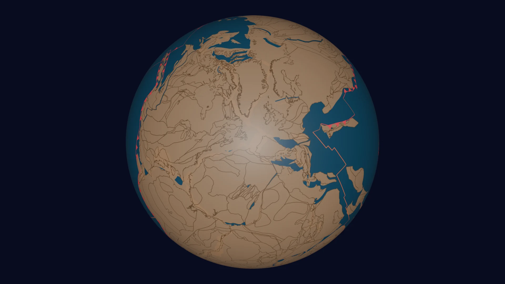
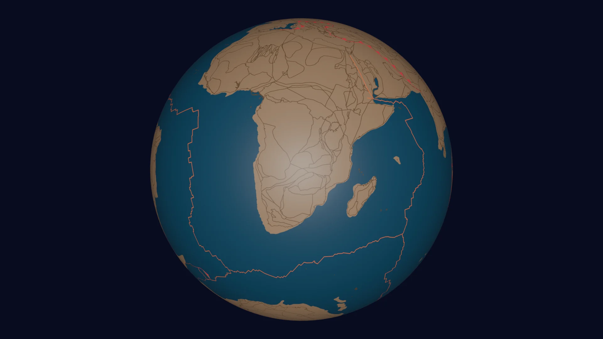
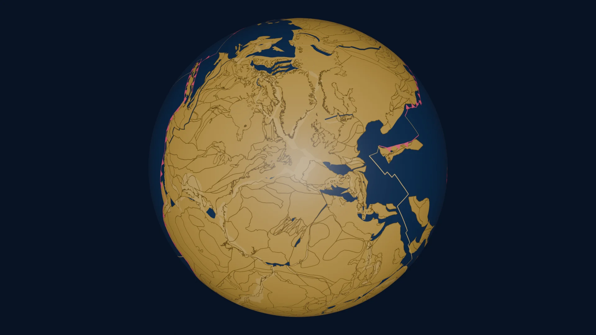
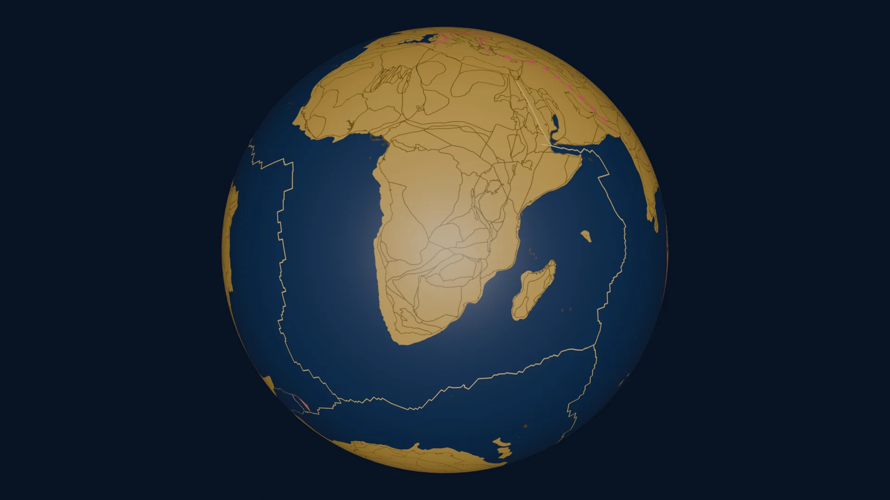
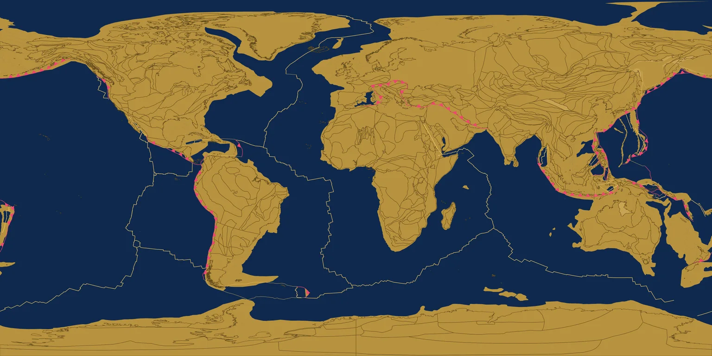
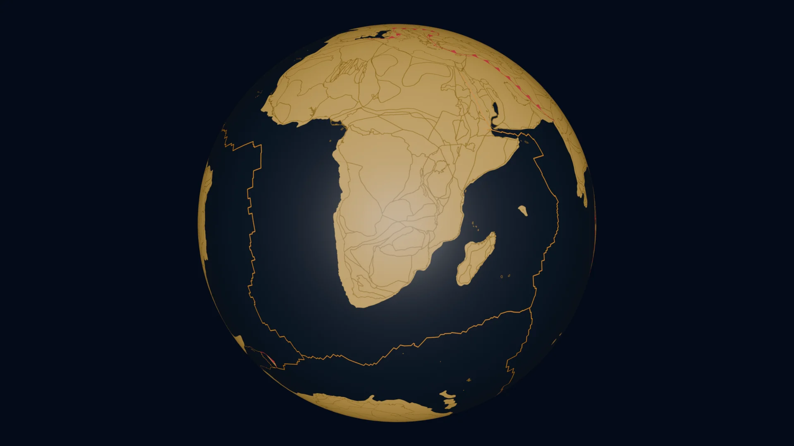
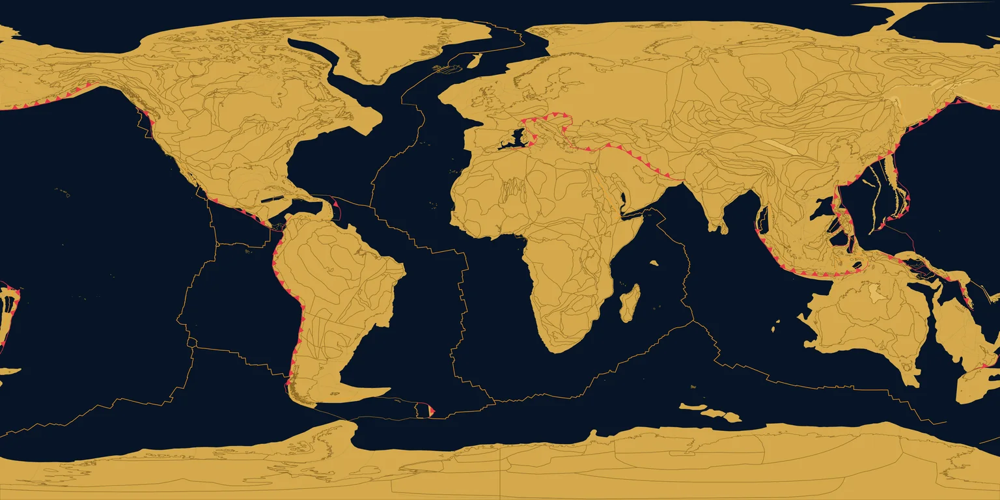

Cinematic palette — three gold/blue candidates on the real render (roadmap item 4)
xian said on 2026-10-13: start roadmap items 4 then 6. Item 4 is "shift from
earth tones to a gold/blue movie-poster aesthetic". Rather than pick a palette
and re-render three films blind, each candidate below was applied to the
existing 4096×2048 texture frames by scripts/recolor_texture.py
(the six colour roles are remapped; anti-aliased edges keep their blend, so
no gplately rerun) and rendered as a real Cycles still by
scripts/render_palette_still.py with the production sphere,
camera, lights and world. Two poses: the Pangaea hold (250 Ma) and the
present-day hold, both at their camera-path rest positions. The flat strip
is the recoloured texture itself (what render_flat.py would
assemble). The site-chrome mock shows the landing page's CSS variables
re-pointed at the same palette (item 6's "gold/blue theme when the render
palette is ready").
Current — earth tones (baseline)
ocean #1a425a · continent #a07c5a at 0.9 · coastline #5c442e · ridge #ff6b35 · trench #e63946
ocean
land
coast
ridge
trench
Pangaea hold, 250 Ma

Present day

Flat (texture, present day)
Site chrome as it is today (blue accent)
Tectonic Globe
1.8 billion years of continental drift
3D GlobeFlat Projection▶ Begin at Rodinia
v7 — Spin reveals
render_globe.py → Blender Cycles + crossfade
A · midnight-gold
ocean #0b1f3a · continent #c9a24a · coastline #6e5218 · ridge #ffb347 · trench #ff5f6d
ocean
land
coast
ridge
trench
Pangaea hold, 250 Ma
Present day
Flat (texture, present day)
Site chrome with this palette
Tectonic Globe
1.8 billion years of continental drift
3D GlobeFlat Projection▶ Begin at Rodinia
v8 — Gold and midnight
render_globe.py → Blender Cycles + crossfade
B · cobalt-brass
ocean #10294d · continent #b8923e · coastline #5f4a1c · ridge #ffd166 · trench #ef476f
ocean
land
coast
ridge
trench
Pangaea hold, 250 Ma

Present day

Flat (texture, present day)

Site chrome with this palette
Tectonic Globe
1.8 billion years of continental drift
3D GlobeFlat Projection▶ Begin at Rodinia
v8 — Cobalt and brass
render_globe.py → Blender Cycles + crossfade
C · ink-ember
ocean #071426 · continent #d4a84b · coastline #8a6a24 · ridge #ff9f1c · trench #e63946 (unchanged)
ocean
land
coast
ridge
trench
Pangaea hold, 250 Ma
Present day

Flat (texture, present day)

Site chrome with this palette
Tectonic Globe
1.8 billion years of continental drift
3D GlobeFlat Projection▶ Begin at Rodinia
v8 — Ink and ember
render_globe.py → Blender Cycles + crossfade
What I see (Tessera, from the stills)
- A · midnight-gold keeps the globe's limb visible against space (the ocean is a shade lighter than the background) and the plate-boundary lines read on both land and sea. Boundaries stay legible at the Pangaea hold where land fills the frame. My recommendation.
- B · cobalt-brass is the gentler version: less saturated gold, bluer ocean. Reads more "atlas plate" than "movie poster". The trench pink is the loudest accent of the three.
- C · ink-ember has the most contrast on land, but the ocean is so close to the space background that the globe's edge disappears on the ocean side at the present-day pose. Fixable by lifting the world background or adding rim light, which is a renderer change beyond a palette swap.
- All three keep the trench and ridge roles distinct from land and from each other. The anti-aliased edges survive the remap (2,088 unique colours in the recoloured present-day texture vs 3,850 in the source; no banding seen at 1:1).
- None of this touches the Explore scrubber yet; its keyframes are exported from the same textures (
export_scrubber_keyframes.py), so they follow whichever palette ships.
Cost to ship a palette across everything that is live
| Step | Scope | Estimate on Amber |
|---|
| Recolour textures | 1,001 main + 801 prequel + 246 sequel = 2,048 PNGs | ~8 s each single-thread; ~35 min 8-way |
| Re-render globe films (Cycles) | 2,738 + 2,186 + 1,795 = 6,719 frames | ~6 s each → ~11 h, nohup via render_supervised.sh; courtesy memo to Pard |
| Re-assemble flat films (PIL) | three films | minutes each |
| Explore keyframes + site theme + posters | 20 keyframes, future layers, CSS variables, poster PNGs | under an hour |
Shipping order if you pick one: textures → flat films (fast, lets you
watch motion in the new palette the same day) → globe films overnight →
Explore keyframes → site theme last, so the page never shows a gold
theme around earth-tone films. Film versions would bump to v8 (main),
prequel v2, sequel v3. The earth-tone films stay in the version history.
Source stills: 1920×1080 Cycles, 64 samples, Metal, rendered 2026-10-13 16:44 PT; served here as WebP q86.